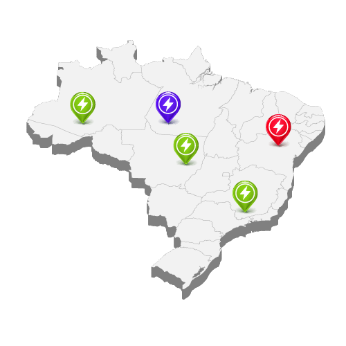
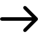
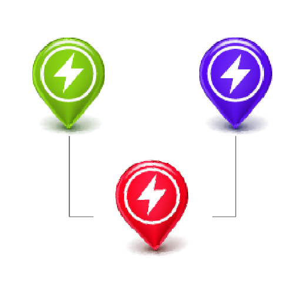
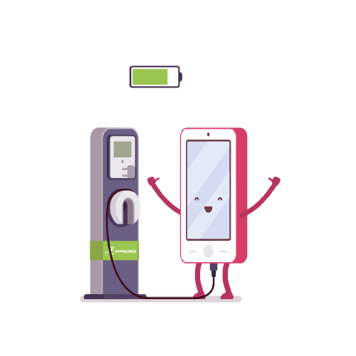

<ion-content>

  <ion-slides pager>

    <ion-slide>
      <div class="topo">
        <span (click)="pular()" class="pular">Pular</span>
        <!---->
        

        <div class="info">
          <h3>
            Mapas com pontos<br>
            de recarga
          </h3>
          <p>
            Mapa do brasil com os pontos de<br>
            recarga mais próximos de você
          </p>
        </div>
        
      </div>
      
      
    </ion-slide>
  
    <ion-slide>
      <div class="topo2">
        <span (click)="pular()" class="pular">Pular</span>
        <!---->
        

        <div class="info">
          <h3>
            Você visualiza os<br>
            status dos pontos
          </h3>
          <p>
            Você poderá visualizar se o ponto<br>
            de recarga está disponível ou não     
          </p>
        </div>
      </div>
      
      
      
    </ion-slide>
  
    <ion-slide>
      <div class="topo3">
        <!---->
        

        <div class="info">
          <h3>
            Chegue no local e<br>
            realize sua recarga
          </h3>
          <p>
            Basta ler o código QR Code e<br>
            começar sua recarga   
          </p>

          <button ion-button round class="btn2" (click)="pular()">Começar</button>
        </div>
      </div>
      
      
    </ion-slide>
  
  </ion-slides>

</ion-content>
